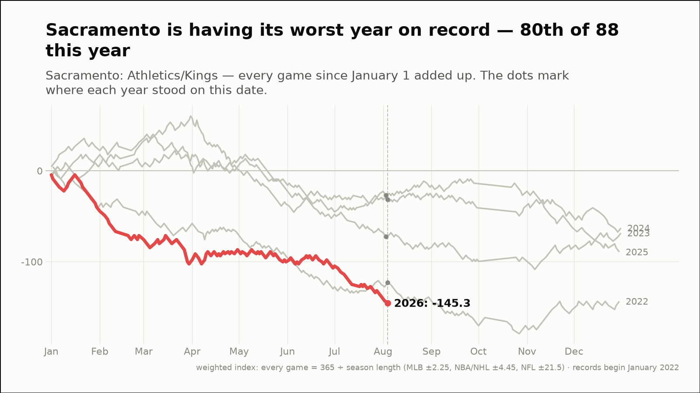
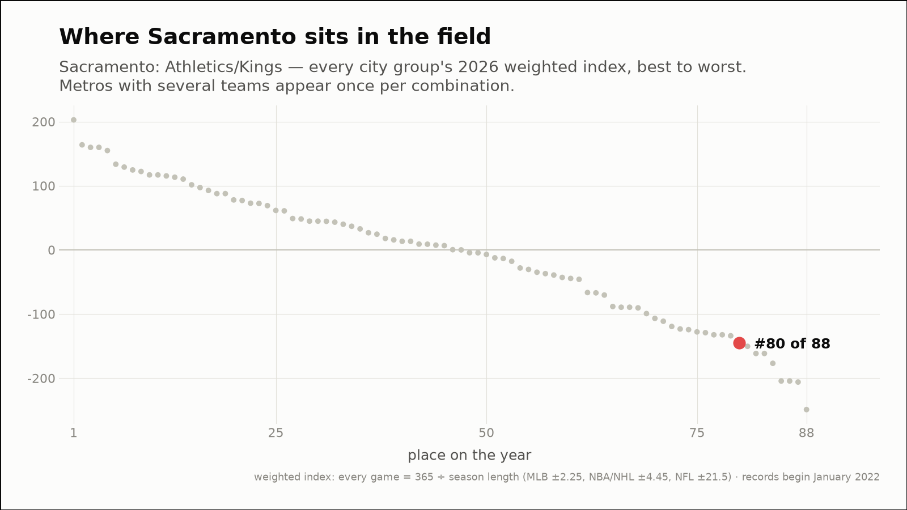
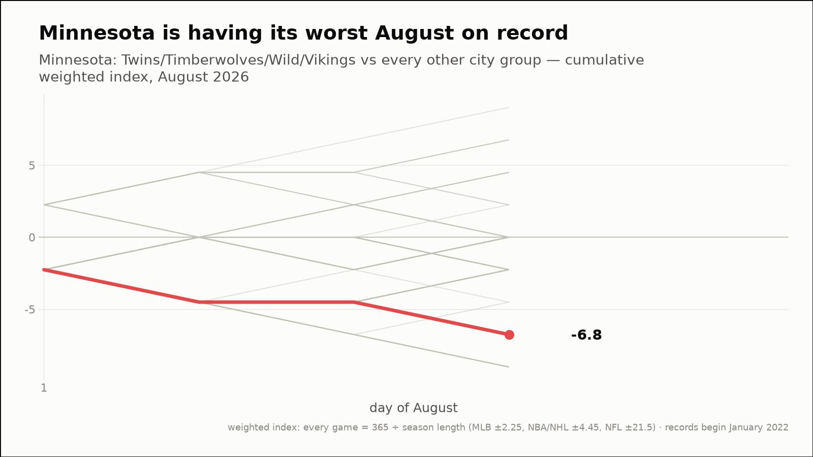
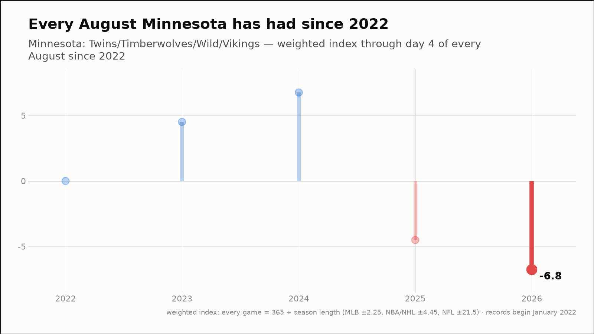
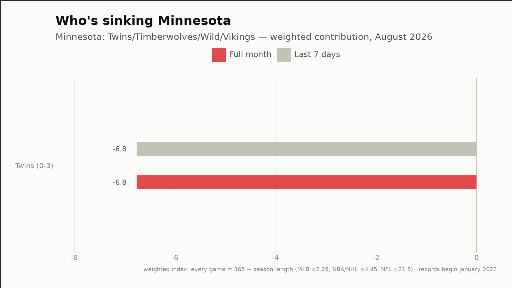
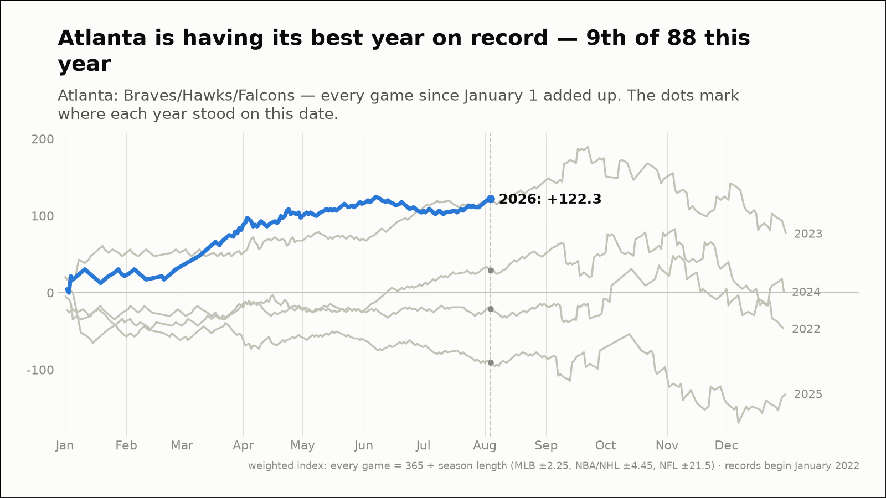
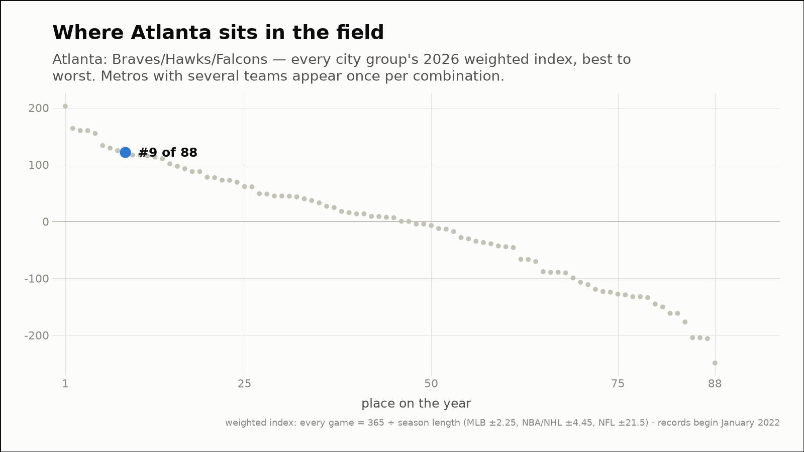

Out of the norm — three fandoms off their own script
The weekly hunt across all 88 city groups, through August 4, 2026
Sacramento is having its worst year on record — 80th of 88 this year
Sacramento: Athletics/Kings
- 2026 so far (through August 4)
- 59-103, -145.3 weighted — 1st-worst of the 5 years since 2022, at the same point
- Against the field
- 80th of 88 city groups on the year (9th percentile)
- This month (through August 4)
- 0-3, -6.8 weighted
- Last 7 days
- 0-3, -6.8 weighted
- Driving it this week
- Athletics (0-3, -6.8)
- Active streaks
- Athletics L3


Minnesota is having its worst August on record
Minnesota: Twins/Timberwolves/Wild/Vikings
- This month (through August 4)
- 0-3, -6.8 weighted — 1st-worst August of the 5 since 2022
- vs all months
- 7th-worst of 51 months since 2022 (13th percentile)
- Last 7 days
- 0-3, -6.8 weighted
- Driving it this week
- Twins (0-3, -6.8)
- Active streaks
- Twins L3



Atlanta is having its best year on record — 9th of 88 this year
Atlanta: Braves/Hawks/Falcons
- 2026 so far (through August 4)
- 101-66, +122.2 weighted — 1st-best of the 5 years since 2022, at the same point
- Against the field
- 9th of 88 city groups on the year (91st percentile)
- This month (through August 4)
- 3-0, +6.8 weighted
- Last 7 days
- 3-0, +6.8 weighted
- Driving it this week
- Braves (3-0, +6.8)
- Active streaks
- Braves W3

